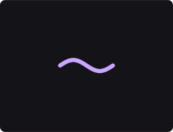
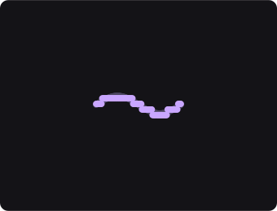
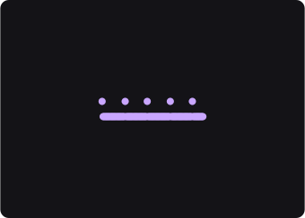
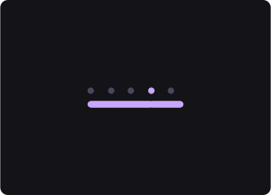

Um número que manda em tudo
PH2D · Motion Nodes · tutorial 6 — os trinta e cinco nós que fazem
um número e um instante, e o que eles mandam fazer ao resto
Nos cinco tutoriais anteriores você pôs coisas na tela, fê-las andar, dobrou-as,
escolheu quem é afetado e entregou a última decisão a uma lei. Em todos eles havia
controlos: você arrastava um número e a cena respondia.
Este grupo é o cérebro. Ele não põe nada na tela e não move nada — ele
faz números e marca instantes, e depois manda esses números e esses
instantes a qualquer outro controlo da cena. É a diferença entre você arrastar
um controlo e a cena arrastá-lo sozinha.
São duas famílias, e elas respondem perguntas diferentes.
Os cartões Value respondem que número é este agora? — e a resposta é
sempre um número, a toda a hora. Os cartões Pulse respondem quando é que
isto acontece? — e a resposta é um instante: ou acontece, ou não acontece.
Um número é contínuo; um instante é seco. O tutorial inteiro é sobre essa diferença.
1 · Abrir
Cole isto inteiro num terminal. Na primeira vez ele compila (alguns minutos); depois abre em
segundos.
cd /home/enio/Documentos/Projetos/PH2D/Worktrees/line-motion-value && env PH2D_GPU_COOK_DEMO=117 cargo run -p ph2d-host-desktop --profile smoke
Carregue em Play.
Quatro panos de peças. Os dois de cima respiram — as peças
crescem e encolhem. Os dois de baixo piscam.
Se os quatro ficarem parados e iguais, o transporte está parado.
Este grupo vive no tempo: sem Play ele é uma fotografia de um instante.
Os quatro panos são o mesmo pano. Mesmo número de peças, mesmo
tamanho, mesmo espaçamento. Em cada par, entre a esquerda e a direita, muda
um cartão — e mais nada. Tudo o que você vai ver de diferente vem daí.
2 · Em cima: o número
O pano da esquerda respira, e o movimento é liso: as peças deslizam de
um tamanho para o outro. Quem manda nisso é o cartão LFO — um oscilador, que é
um nó que faz um número subir e descer sozinho, para sempre.
Clique no cartão LFO da esquerda e arraste a linha
Amplitude.
O pano respira mais fundo ou mais raso. Em zero ele
pára de respirar — o número deixa de mudar.
Arraste a linha Period.
A respiração fica mais lenta ou mais rápida.
Period é quantos segundos leva uma volta inteira.
Repare no FIO. Do cartão LFO sai uma linha que vai
ter ao cartão Scale, e ela não entra pelo lado — entra na linha
Scale do cartão. É isso que quer dizer «um número que manda num
controlo»: aquela linha deixou de ser sua e passou a ser do oscilador. Puxe-a se quiser
o controlo de volta.
3 · O mesmo número, moldado
O pano da direita respira aos degraus: ele salta de tamanho em tamanho
em vez de deslizar. E o oscilador dele é igual ao da esquerda — mesma amplitude, mesmo
período. A diferença é um cartão a mais no caminho do fio: o
Quantize, que pega no número que chega e arredonda-o a uma grelha.

só o LFOo tamanho ao longo de uma volta — ele desliza, e
toma 49 valores diferentes

LFO + Quantizeo mesmo número, com a onda lisa por baixo — ele segura e
salta, e toma 4
Estas duas imagens não são desenhos. Cada ponto é o tamanho que
o motor deu a uma peça de verdade, num instante de verdade, ao correr esta cena. Na
segunda, os pontos apagados por baixo são a primeira — é o mesmo número, com um
cartão pelo meio. Se as duas contarem a mesma história, elas
recusam-se a ser geradas.
Clique no cartão Quantize e arraste a linha Step
para perto de zero.
Os degraus somem e o pano da direita fica igual ao da
esquerda — o mesmo número, sem grelha nenhuma.
Arraste o Step para o fim do slider.
Fica um degrau só: as peças param de respirar. A grelha
ficou tão grossa que o número nunca chega ao degrau seguinte.
Se o pano da direita nunca mudar, o fio do Quantize
está solto — os dois panos de cima deviam ser diferentes.
4 · Em baixo: o instante
Os dois panos de baixo piscam. Quem marca o instante é o cartão Beat —
um metrónomo: ele não faz um número, ele bate. E quem transforma a batida numa
coisa que se vê é o Strobe, que dá um clarão à peça e deixa-o desvanecer.
Clique no cartão Beat da esquerda e arraste
Period.
O pano da esquerda pisca mais depressa ou mais devagar. O da
direita não muda — cada metade tem o seu metrónomo.
Clique no cartão Strobe e arraste Decay.
O clarão desvanece mais devagar (a peça fica acesa mais tempo) ou
quase instantaneamente.
Por que é que um instante precisa de outro cartão para se ver.
Um número pode mandar diretamente numa linha, porque uma linha quer um número. Um
instante não: ele não é um valor, é um acontecimento. Alguém tem de decidir o
que fazer quando ele acontece — e é para isso que servem os cartões que recebem
um pulso, como este Strobe.
5 · O mesmo instante, contado
O pano da direita pisca a cada quatro batidas. O metrónomo dele bate ao
mesmo ritmo do outro — o que muda é, outra vez, um cartão a mais: o
Counter, que conta as batidas e só deixa passar a que fecha a volta.

só o Beato tamanho ao longo de quatro batidas — quatro
clarões

Beat + Countero mesmo ritmo, com os quatro apagados por baixo —
um clarão
Clique no cartão Counter e arraste a linha Count
de 4 para 2.
O pano da direita passa a piscar ao dobro da
velocidade.
Ponha o Count em 1.
Ele fica igual ao da esquerda — contar de um em um é não
contar.
Se os dois panos de baixo piscarem sempre ao mesmo ritmo, o fio do
Counter está solto.
O Counter tem duas saídas, e a que o pano usa é a segunda. A
primeira é a contagem — um número que sobe, 0, 1, 2, 3, e volta. A segunda
chama-se carry e é um instante: ela marca a batida em que a contagem dá
a volta. Um número e um instante saem do mesmo cartão, e você escolhe qual usa ligando
uma ou outra.
6 · O mapa do grupo
São trinta e cinco cartões. Você não precisa de os conhecer um a um — precisa de
saber em que prateleira procurar.
quando você quer…
procure por
exemplos
um número que anda sozinho
Value
LFO · Noise · Wave · Time
um número que vem da cena
Value
Attribute (a posição, a idade, o tamanho) · Cursor (o rato)
um número escrito à mão
Value
Number
mudar um número que já tem
Value
Math · Map Range · Curve · Quantize · Mix
um número do conjunto todo
Value
Reduce (soma, média, máximo) · Normalize
um ritmo
Pulse
Beat
disparar quando um número passa de um limite
Pulse
Compare · Threshold
disparar quando uma coisa muda
Pulse
On Change
contar ou desbastar instantes
Pulse
Counter
transformar um instante num número
Pulse
Level (0 ou 1) · ADSR (uma curva que sobe e desce)
segurar um número até ao próximo instante
Pulse
Sample & Hold
A ponte nos dois sentidos. Um número vira instante com
Compare (dispara quando passa de um limite); um instante vira número com
Level (0 quando não, 1 quando sim) ou com ADSR (uma curva que
sobe no disparo e volta a cair). É por isso que as duas famílias vivem no mesmo grupo:
elas convertem-se uma na outra.
7 · O que isto custa
Um fio destes chega a qualquer controlo de qualquer cartão da cena — e
a cena pode ter muita coisa. Vale a pena saber que isso agora é barato.
cd /home/enio/Documentos/Projetos/PH2D/Worktrees/line-motion-value && env PH2D_GPU_COOK_DEMO=116 cargo run -p ph2d-host-desktop --profile smoke
Carregue em Play.
Um pano de 102 400 peças e um fio: o cartão
LFO manda no tamanho de todas elas, e o pano inteiro respira
liso.
Cem mil peças a obedecer a um número, sem engasgar. Até esta
volta de trabalho, aquela única ligação tirava a cena da placa gráfica e
mandava-a para o processador — e o mesmo pano custava cinquenta vezes mais.
Agora não. É a razão de esta cena ser tão grande: um custo destes sobre dez peças não se
veria.